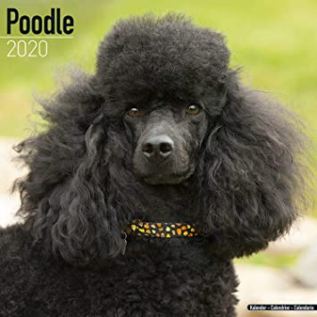

Poodle
Weight: 20 – 32kg
Coat: Dense coat of curled hair
Color: Many colors
The Poodle is a formal dog breed that comes in three varieties: Standard Poodle, Miniature Poodle, and Toy Poodle. The origin of the breed is still discussed, with a prominent dispute over whether the poodle descends from Germany as a type of water dog, or from the French Barbet. Ranked second most intelligent dog breed just behind the Border Collie, the poodle is skillful in many dog sports and activities, including agility, obedience, tracking, herding, circus performance, and assistance dogs.